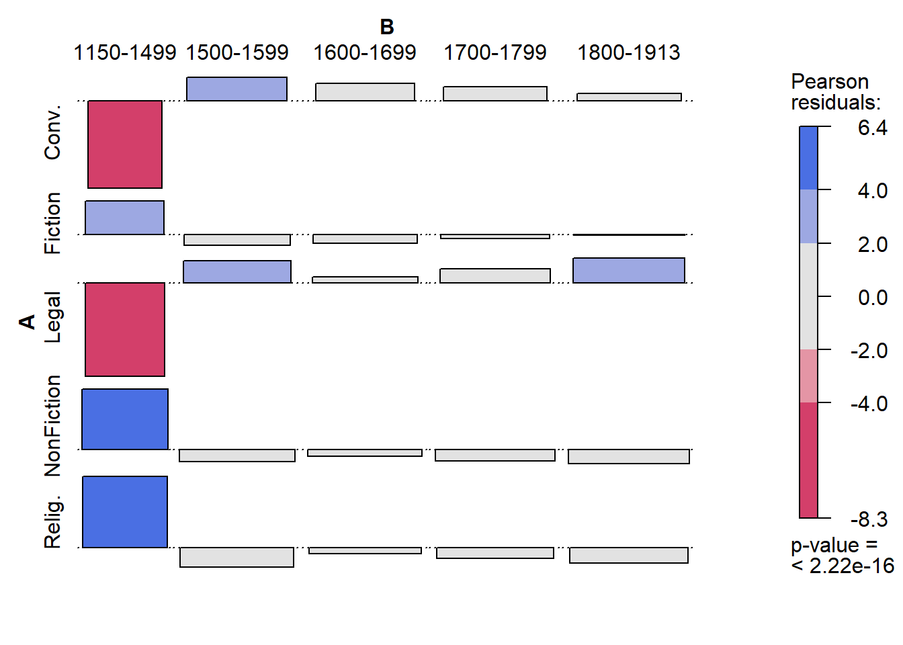
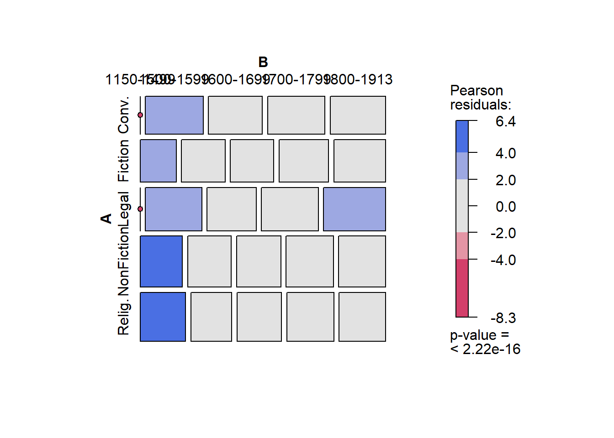
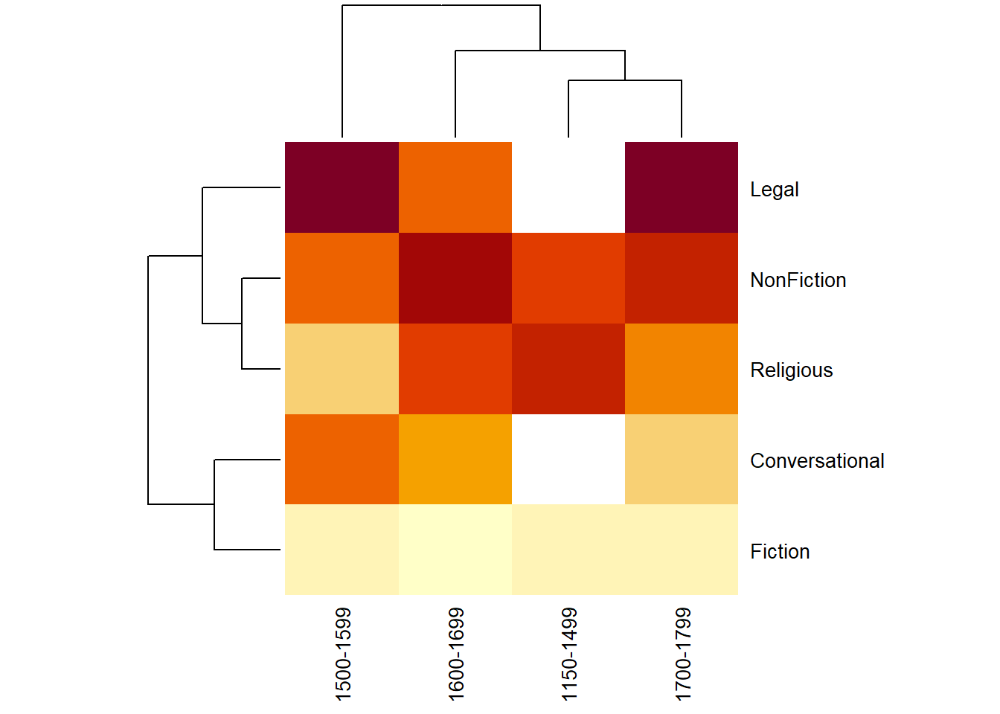
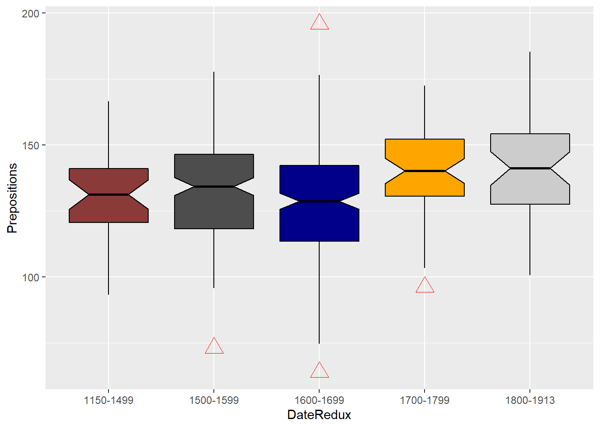
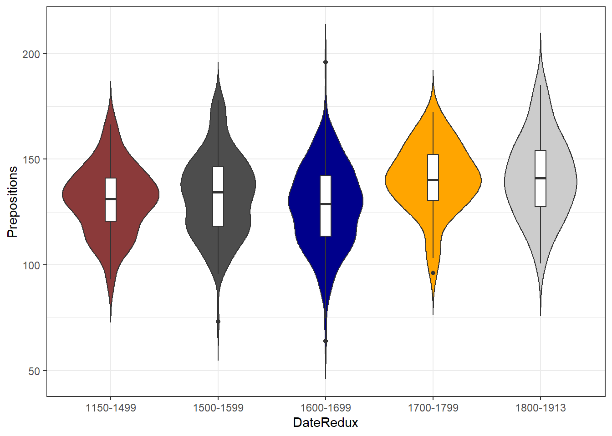
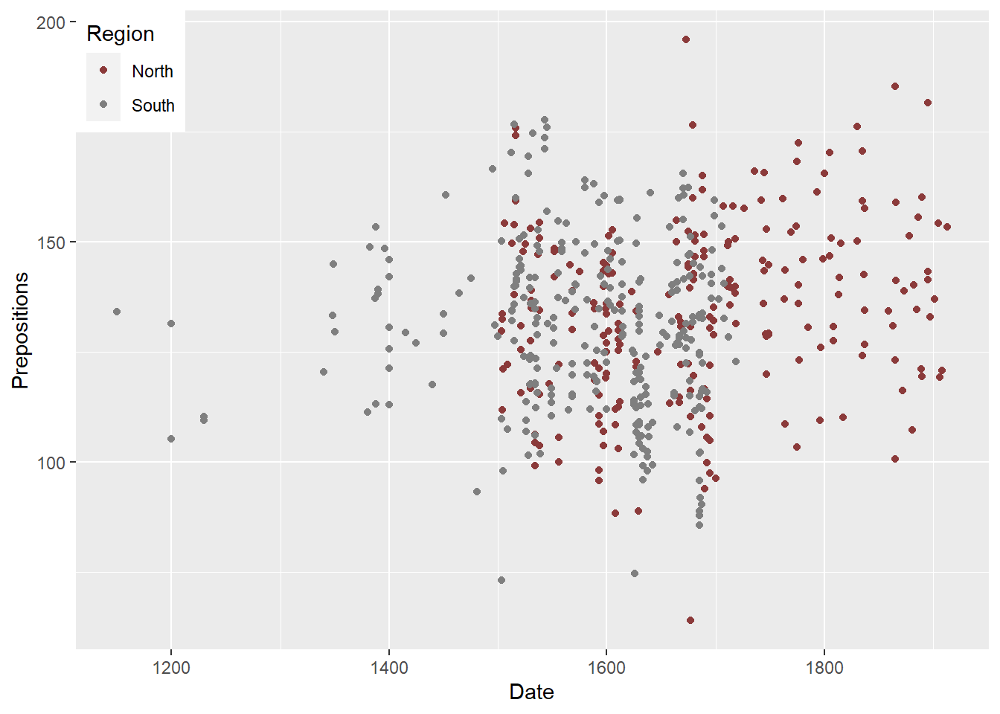
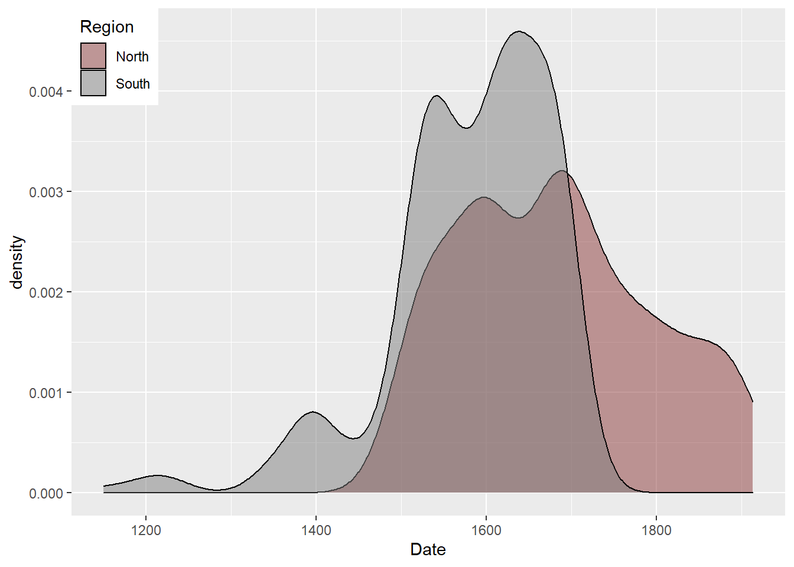

Advanced Visualization Methods in R
Martin Schweinberger
2020-09-29

Introduction
This tutorial introduces different types of data visualization. The entire R-markdown document for the tutorial can be downloaded here. A more in-depth and highly recommendable resource for data visualization in R is Wickham (2016). A more general introduction to data visualization - which is still highly recommendable is Healy (2018).
Preparation and session set up
This tutorial is based on R. If you have not installed R or are new to it, you will find an introduction to and more information how to use R here. For this tutorials, we need to install certain packages from an R library so that the scripts shown below are executed without errors. Before turning to the code below, please install the packages by running the code below this paragraph. If you have already installed the packages mentioned below, then you can skip ahead ignore this section. To install the necessary packages, simply run the following code - it may take some time (between 1 and 5 minutes to install all of the libraries so you do not need to worry if it takes some time).
# install libraries
install.packages(c("knitr", "lattice", "ggplot2", "dplyr", "likert", "scales",
"vcd", "tm", "wordcloud", "stringr", "SnowballC", "tidyr",
"gridExtra", "knitr", "kableExtra", "stringr"))Once you have installed R, R-Studio, and have also initiated the session by executing the code shown above, you are good to go.
Getting started
Before turning to the graphs, we will load the packages for this tutorial.
# activate packages
lapply(c("knitr", "lattice", "ggplot2", "dplyr", "likert", "scales",
"vcd", "tm", "wordcloud", "stringr", "SnowballC", "tidyr",
"gridExtra", "knitr", "kableExtra", "stringr"),
library,
character.only = TRUE)## [[1]]
## [1] "knitr" "stats" "graphics" "grDevices" "utils" "datasets"
## [7] "methods" "base"
##
## [[2]]
## [1] "lattice" "knitr" "stats" "graphics" "grDevices" "utils"
## [7] "datasets" "methods" "base"
##
## [[3]]
## [1] "ggplot2" "lattice" "knitr" "stats" "graphics" "grDevices"
## [7] "utils" "datasets" "methods" "base"
##
## [[4]]
## [1] "dplyr" "ggplot2" "lattice" "knitr" "stats" "graphics"
## [7] "grDevices" "utils" "datasets" "methods" "base"
##
## [[5]]
## [1] "likert" "xtable" "dplyr" "ggplot2" "lattice" "knitr"
## [7] "stats" "graphics" "grDevices" "utils" "datasets" "methods"
## [13] "base"
##
## [[6]]
## [1] "scales" "likert" "xtable" "dplyr" "ggplot2" "lattice"
## [7] "knitr" "stats" "graphics" "grDevices" "utils" "datasets"
## [13] "methods" "base"
##
## [[7]]
## [1] "vcd" "grid" "scales" "likert" "xtable" "dplyr"
## [7] "ggplot2" "lattice" "knitr" "stats" "graphics" "grDevices"
## [13] "utils" "datasets" "methods" "base"
##
## [[8]]
## [1] "tm" "NLP" "vcd" "grid" "scales" "likert"
## [7] "xtable" "dplyr" "ggplot2" "lattice" "knitr" "stats"
## [13] "graphics" "grDevices" "utils" "datasets" "methods" "base"
##
## [[9]]
## [1] "wordcloud" "RColorBrewer" "tm" "NLP" "vcd"
## [6] "grid" "scales" "likert" "xtable" "dplyr"
## [11] "ggplot2" "lattice" "knitr" "stats" "graphics"
## [16] "grDevices" "utils" "datasets" "methods" "base"
##
## [[10]]
## [1] "stringr" "wordcloud" "RColorBrewer" "tm" "NLP"
## [6] "vcd" "grid" "scales" "likert" "xtable"
## [11] "dplyr" "ggplot2" "lattice" "knitr" "stats"
## [16] "graphics" "grDevices" "utils" "datasets" "methods"
## [21] "base"
##
## [[11]]
## [1] "SnowballC" "stringr" "wordcloud" "RColorBrewer" "tm"
## [6] "NLP" "vcd" "grid" "scales" "likert"
## [11] "xtable" "dplyr" "ggplot2" "lattice" "knitr"
## [16] "stats" "graphics" "grDevices" "utils" "datasets"
## [21] "methods" "base"
##
## [[12]]
## [1] "tidyr" "SnowballC" "stringr" "wordcloud" "RColorBrewer"
## [6] "tm" "NLP" "vcd" "grid" "scales"
## [11] "likert" "xtable" "dplyr" "ggplot2" "lattice"
## [16] "knitr" "stats" "graphics" "grDevices" "utils"
## [21] "datasets" "methods" "base"
##
## [[13]]
## [1] "gridExtra" "tidyr" "SnowballC" "stringr" "wordcloud"
## [6] "RColorBrewer" "tm" "NLP" "vcd" "grid"
## [11] "scales" "likert" "xtable" "dplyr" "ggplot2"
## [16] "lattice" "knitr" "stats" "graphics" "grDevices"
## [21] "utils" "datasets" "methods" "base"
##
## [[14]]
## [1] "gridExtra" "tidyr" "SnowballC" "stringr" "wordcloud"
## [6] "RColorBrewer" "tm" "NLP" "vcd" "grid"
## [11] "scales" "likert" "xtable" "dplyr" "ggplot2"
## [16] "lattice" "knitr" "stats" "graphics" "grDevices"
## [21] "utils" "datasets" "methods" "base"
##
## [[15]]
## [1] "kableExtra" "gridExtra" "tidyr" "SnowballC" "stringr"
## [6] "wordcloud" "RColorBrewer" "tm" "NLP" "vcd"
## [11] "grid" "scales" "likert" "xtable" "dplyr"
## [16] "ggplot2" "lattice" "knitr" "stats" "graphics"
## [21] "grDevices" "utils" "datasets" "methods" "base"
##
## [[16]]
## [1] "kableExtra" "gridExtra" "tidyr" "SnowballC" "stringr"
## [6] "wordcloud" "RColorBrewer" "tm" "NLP" "vcd"
## [11] "grid" "scales" "likert" "xtable" "dplyr"
## [16] "ggplot2" "lattice" "knitr" "stats" "graphics"
## [21] "grDevices" "utils" "datasets" "methods" "base"Also, we will load the data that we will display. The data set is called lmmdata but we will change the name to plotdata for this tutorial. The data set is based on the Penn Parsed Corpora of Historical English (PPC) and it contains the date when a text was written (Date), the genre of the text (Genre), the name of the text (Text), the relative frequency of prepositions in the text (Prepositions), and the region in which the text was written (Region). We also add two more variables to the data called GenreRedux and DateRedux. GenreRedux collapses the existing genres into five main categories (Conversational, Religious, Legal, Fiction, and NonFiction) while DateRedux collapses the dates when the texts were composed into five main periods (1150-1499, 1500-1599, 1600-1699, 1700-1799, and 1800-1913). We also factorize non-numeric variables.
# load data
plotdata <- read.delim("https://slcladal.github.io/data/lmmdata.txt", header = TRUE) %>%
mutate(GenreRedux = case_when(str_detect(.$Genre, "Letter") ~ "Conversational",
Genre == "Diary" ~ "Conversational",
Genre == "Bible"|Genre == "Sermon" ~ "Religious",
Genre == "Law"|Genre == "TrialProceeding" ~ "Legal",
Genre == "Fiction" ~ "Fiction",
TRUE ~ "NonFiction")) %>%
mutate(DateRedux = case_when(Date < 1500 ~ "1150-1499",
Date < 1600 ~ "1500-1599",
Date < 1700 ~ "1600-1699",
Date < 1800 ~ "1700-1799",
TRUE ~ "1800-1913")) %>%
mutate(Genre = factor(Genre),
Text = factor(Text),
Region = factor(Region),
GenreRedux = factor(GenreRedux),
DateRedux = factor(DateRedux))
kable(head(plotdata), caption = "First 6 rows of the plotdata") %>%
kable_styling(bootstrap_options = "striped", full_width = T, position = "left")| Date | Genre | Text | Prepositions | Region | GenreRedux | DateRedux |
|---|---|---|---|---|---|---|
| 1736 | Science | albin | 166.01 | North | NonFiction | 1700-1799 |
| 1711 | Education | anon | 139.86 | North | NonFiction | 1700-1799 |
| 1808 | PrivateLetter | austen | 130.78 | North | Conversational | 1800-1913 |
| 1878 | Education | bain | 151.29 | North | NonFiction | 1800-1913 |
| 1743 | Education | barclay | 145.72 | North | NonFiction | 1700-1799 |
| 1908 | Education | benson | 120.77 | North | NonFiction | 1800-1913 |
In addition, we will create a vector with colors that we will be using throughout this tutorial. This is not really necessary but it shares us from having to specify colors every time when we do not want to use the default colors that R provides. In this case, we will specify five colors but this palette could be extended. You can also check out the colors that are available in R here and the palettes or sets of colors here.
mycol <- c("indianred4", "gray30", "darkblue", "orange", "gray80")We will now turn to creating the graphs.
1 Association plots
Another plot type that is related to bar plots is the association plot. Association plots are similar to bar plots in that they display difference as bars above or below a line (as shown above). However, association plots show the difference between the observed and expected frequencies rather than differences as deviations from a reference. Therefore, they are often used when graphically representing tables with absolute frequencies. We use the already loaded vcd package to create association plots.
We also modify the reduced plotdata as association plots work on matrices rather than data frames or tibbles. In addition, we will drop more genres as to avoid overlap in the y-axis labels later on.
# reduce data
assocdata <- plotdata %>%
droplevels() %>%
group_by(GenreRedux, Region) %>%
dplyr::summarise(Prepositions = round(mean(Prepositions), 0)) %>%
tidyr::spread(Region, Prepositions)
# create matrix
assocmx <- as.matrix(assocdata[,2:3])
attr(assocmx, "dimnames")[1] <- as.vector(assocdata[,1])
# inspect data
assocmx North SouthConversational 131 127 Fiction 122 109 Legal 149 139 NonFiction 139 137 Religious 132 131
Association plots are created by using the “assoc” function which takes a table (or a similar format such as a matrix or a data frame) as their argument. In addition, we specify “shade” as “T” in order to color code the bars in the association plot and to add a legend.
# create association plot
assoc(assocmx, shade=TRUE)
The bars above the line indicate that the observed frequency is higher than expected, bars under the line indicate frequencies that are lower than expected. However, the lack of colouring strongly suggests that there are no significant differences between the observed and the expected frequencies which means that genre is unlikely to have a significant effect of the frequency of prepositions.
2 Mosaic plots
Another plot which is useful to graphically depict the relationship of categorical variables is the mosaic plot. The size of the boxes in a mosaic plot indicate how frequent that subcategory is and the colours show whether or not the category differs from the value that is expected if given the overall distribution in the table. In addition, the hue of the colour shows how great the difference between observed and expected is and thus indicates whether the respective subcategory deviates significantly from the expected frequency.
# create a mosaic plot
mosaic(assocmx, shade=T, legend=TRUE) 
According to the mosaic plot above, there are neither significant differences in the number of observations (the boxes are similar in size and shape) and that genre does not have a significant effect on the frequency of prepositions as the boxes are grey and not coloured.
3 Heat maps
Heat maps are similar to mosaic plots in that they display frequency information and use color-coding to indicate high and low values. Heat maps also work on matrices but they are much more powerful and versatile that mosaic plots.
Heat maps are a very popular way to display frequency information and various packages have been written to create or customize heatmaps (for example the packages “ComplexHeatmap”, “dendextend”, “d3heatmap”, “pheatmap”) which means that many aspects of heatmaps can be modified. In this example, we will only use the most basic function to create a heat map.
We again modify the data and create a matrix from the original plotdata. In addition, we scale the frequencies. This is not necessary in the present case but when dealing with variables which differ in their mean and variance because they reflect different variables, scaling will normalize such variables and render their values comparable.
# create data
heatdata <- plotdata %>%
group_by(DateRedux, GenreRedux) %>%
dplyr::summarise(Prepositions = round(mean(Prepositions), 0)) %>%
tidyr::spread(DateRedux, Prepositions)
# create matrix
heatmx <- as.matrix(heatdata[,2:5])
attr(heatmx, "dimnames")[1] <- as.vector(heatdata[,1])
heatmx <- scale(heatmx)
# inspect data
heatmx 1150-1499 1500-1599 1600-1699 1700-1799Conversational NA 0.2024949 -0.2940048 -0.78003250 Fiction -1.1503946 -1.2438972 -1.5540253 -1.21338389 Legal NA 1.3596086 0.2310038 1.17004875 NonFiction 0.4889177 0.3471341 1.0710174 0.73669736 Religious 0.6614769 -0.6653404 0.5460089 0.08667028 attr(,“scaled:center”) 1150-1499 1500-1599 1600-1699 1700-1799 119.6667 130.2000 126.8000 139.2000 attr(,“scaled:scale”) 1150-1499 1500-1599 1600-1699 1700-1799 23.180452 13.827509 9.523655 9.230385
Now that we have created a data matrix, we can cerate a simple heat map.
# create heat map
heatmap(heatmx, scale = "none", cexCol = 1, cexRow = 1)
The dendrogram on the top shows that documents from 1600 and 1700 as well as documents from 1800 and 1900 are grouped together and thus are more similar with respect to their preposition frequencies. The dendrogram on the left indicates that we have two categories of documents: the genres to towards the bottom tend to have fewer prepositions (indicated by the light colours) while the documents to the top tend to have more prepositions (thus the darker hues). Legal texts (genre = Law) have notably higher rates of prepositions as is derivable from the dark red colour of such texts.
4 Balloon plots
So far, we have plotted values but we have not plotted the underlying distributions. For instance, we have plotted mean values but not the variance within the distribution. One handy way to combine plotting general trends and their underlying distributions are boxplots.
Boxplots, or Box-and-Whisker Plots, are exploratory graphics first created by John W. Tukey and they show the relationships between categorical and numeric variables. They are very useful because they not only provide measures of central tendency (the median which is the line in the middle of the box) but they also offer information about the distribution of the data. To elaborate, fifty percent of data points fall within the box while seventy-five percent of data points fall within the whiskers (the lines which look like extended error bars): the box thus encompasses the interquartile range between the first and third quartile. The whiskers show the minimum and maximum values in the data and only outliers (data points that lie 1.5 times the interquartile range or more above the third quartile or 1.5 times the interquartile range or more below the first quartile. If the whiskers differ in length, then this means that the data is asymmetrically distributed.
# create data
boxdata <- plotdata %>%
dplyr::mutate(DateRedux = factor(DateRedux))
# inspect data
head(boxdata)Date Genre Text Prepositions Region GenreRedux DateRedux 1 1736 Science albin 166.01 North NonFiction 1700-1799 2 1711 Education anon 139.86 North NonFiction 1700-1799 3 1808 PrivateLetter austen 130.78 North Conversational 1800-1913 4 1878 Education bain 151.29 North NonFiction 1800-1913 5 1743 Education barclay 145.72 North NonFiction 1700-1799 6 1908 Education benson 120.77 North NonFiction 1800-1913
We will now create simple boxplots that show the distribution of prepositions per time period.
# create boxplot
ggplot(boxdata, aes(DateRedux, Prepositions, color = GenreRedux)) +
geom_boxplot(fill=mycol,
color="black") 
Another interesting feature of boxplots is that they allow us to visually get an idea whether categories differ significantly. Because if add “notch = T” and the notches of the boxplots do not overlap, then this is a very strong indication that the categories actually differ significantly (see below).
# create boxplot
ggplot(boxdata, aes(DateRedux, Prepositions, color = GenreRedux)) +
geom_boxplot(outlier.colour="red",
outlier.shape=2,
outlier.size=5,
notch=T,
fill=mycol,
color="black") 
5 Violin plots
An alternative to boxplots which display the distribution within the data even more accurately are violin plots.
# create violin plot
ggplot(boxdata, aes(DateRedux, Prepositions, fill = DateRedux)) +
geom_violin(trim = FALSE) +
geom_boxplot(width=0.1, fill="white") +
scale_fill_manual(values = mycol) +
theme_bw() +
theme(legend.position = "none") 
6 Density Plots
Another way to visualize the distribution of the data with respect to numeric variables are density plots or Kernel Density Plots. Density plots smooth the data using so-called kernel smoothing to even out the distribution of frequencies along the lines of a numeric or interval variable. The peaks of density plots help display where values are concentrated over the interval. To show the relationship between the variable and the density plot, we will first create a scatter plot and then create a density plot of the variable displayed on the x-axis of the scatter plot.
# create dot plot
ggplot(plotdata, aes(x = Date, y = Prepositions, color=Region)) +
geom_point() +
scale_color_manual(values = c("indianred4", "gray50")) +
theme(legend.position=c(0,1), legend.justification=c(0,1)) 
We will now create a marginal density plot of Date (x-axis) to show when texts from the north and south were particularly common.
# create dot plot
ggplot(plotdata, aes(Date, fill=Region)) +
geom_density(alpha=.5) +
scale_fill_manual(values = c("indianred4", "gray50")) +
theme(legend.position=c(0,1), legend.justification=c(0,1)) 
The density plot shows that the texts differ substantially with respect to where they were written as the distribution of texts written in southern Britain continues way into the 19th century while we only have texts written in north until about 1800.
Citation & Session Info
Schweinberger, Martin. 2020. Advanced Visualization Methods in R. Brisbane: The University of Queensland. url: https://slcladal.github.io/advancedgraphs.html (Version 2020.09.29).
@manual{schweinberger2020adviz,
author = {Schweinberger, Martin},
title = {Advanced Visualization Methods in R},
note = {https://slcladal.github.io/advancedgraphs.html},
year = {2020},
organization = {The University of Queensland, School of Languages and Cultures},
address = {Brisbane},
edition = {2020/09/29}
}sessionInfo()## R version 4.0.2 (2020-06-22)
## Platform: x86_64-w64-mingw32/x64 (64-bit)
## Running under: Windows 10 x64 (build 18362)
##
## Matrix products: default
##
## locale:
## [1] LC_COLLATE=German_Germany.1252 LC_CTYPE=German_Germany.1252
## [3] LC_MONETARY=German_Germany.1252 LC_NUMERIC=C
## [5] LC_TIME=German_Germany.1252
##
## attached base packages:
## [1] grid stats graphics grDevices utils datasets methods
## [8] base
##
## other attached packages:
## [1] kableExtra_1.2.1 gridExtra_2.3 tidyr_1.1.2 SnowballC_0.7.0
## [5] stringr_1.4.0 wordcloud_2.6 RColorBrewer_1.1-2 tm_0.7-7
## [9] NLP_0.2-0 vcd_1.4-8 scales_1.1.1 likert_1.3.5
## [13] xtable_1.8-4 dplyr_1.0.2 ggplot2_3.3.2 lattice_0.20-41
## [17] knitr_1.30
##
## loaded via a namespace (and not attached):
## [1] zoo_1.8-8 tidyselect_1.1.0 xfun_0.16 slam_0.1-47
## [5] reshape2_1.4.4 purrr_0.3.4 colorspace_1.4-1 vctrs_0.3.4
## [9] generics_0.0.2 viridisLite_0.3.0 htmltools_0.5.0 yaml_2.2.1
## [13] rlang_0.4.7 pillar_1.4.6 glue_1.4.2 withr_2.3.0
## [17] lifecycle_0.2.0 plyr_1.8.6 munsell_0.5.0 gtable_0.3.0
## [21] rvest_0.3.6 psych_2.0.8 evaluate_0.14 labeling_0.3
## [25] lmtest_0.9-38 parallel_4.0.2 highr_0.8 Rcpp_1.0.5
## [29] webshot_0.5.2 tmvnsim_1.0-2 farver_2.0.3 mnormt_2.0.2
## [33] digest_0.6.25 stringi_1.5.3 tools_4.0.2 magrittr_1.5
## [37] tibble_3.0.3 crayon_1.3.4 pkgconfig_2.0.3 ellipsis_0.3.1
## [41] MASS_7.3-51.6 xml2_1.3.2 httr_1.4.2 rmarkdown_2.3
## [45] rstudioapi_0.11 R6_2.4.1 nlme_3.1-148 compiler_4.0.2References
Healy, Kieran. 2018. Data Visualization: A Practical Introduction. Princeton University Press.
Wickham, Hadley. 2016. Ggplot2: Elegant Graphics for Data Analysis. springer.